Gallery
A collection of moments from conferences, poster presentations, research showcases, and product demo events connected to my work in bioengineering, biosensors, translational diagnostics, and sensing platforms.
BMES 2024
Highlights from BMES 2024, including conference participation, poster presentation activities, and interactions with the broader biomedical engineering research community.
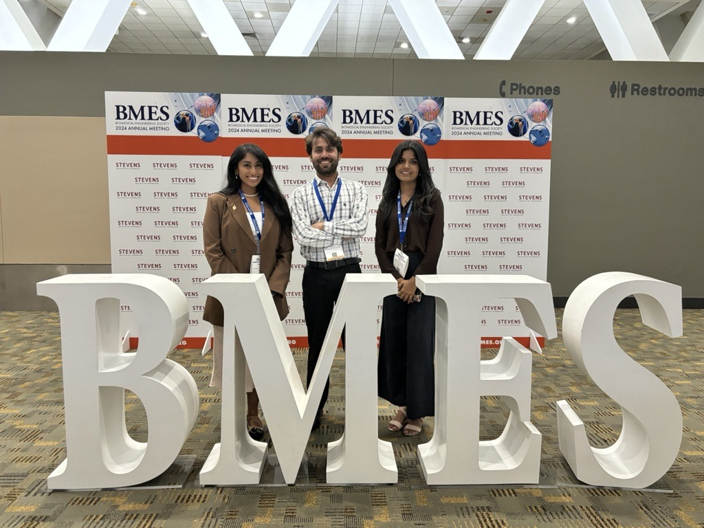
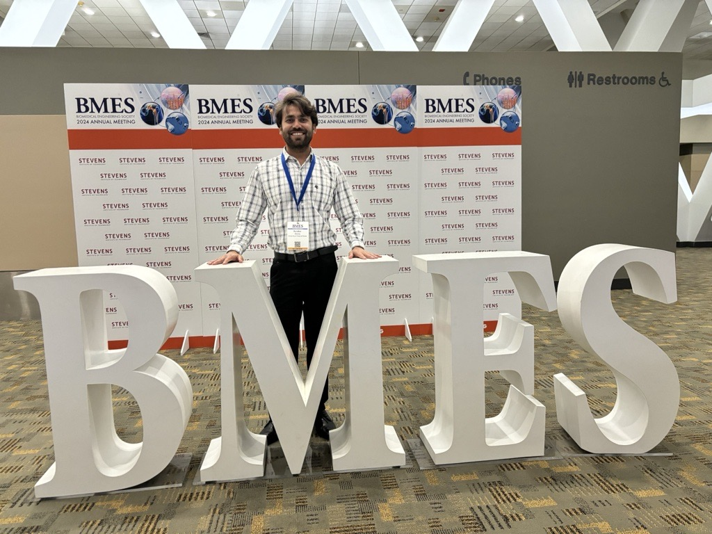
BMES 2025
Selected moments from BMES 2025 featuring continued research dissemination, engagement with the biomedical engineering community, and presentation of ongoing biosensor and diagnostic platform work.
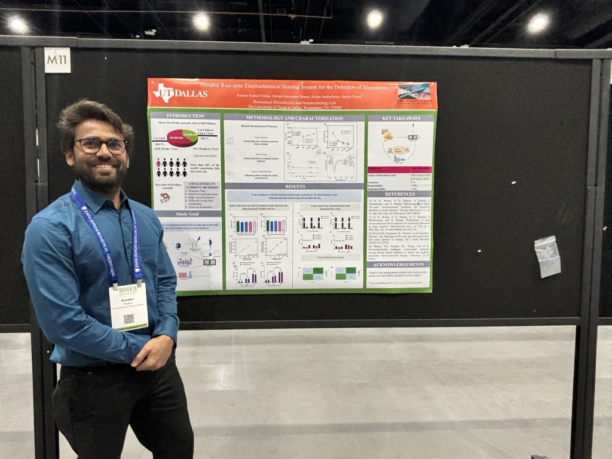
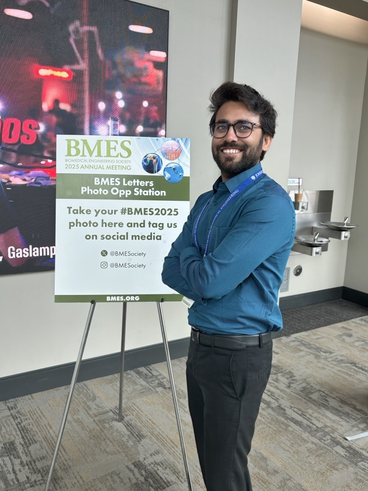
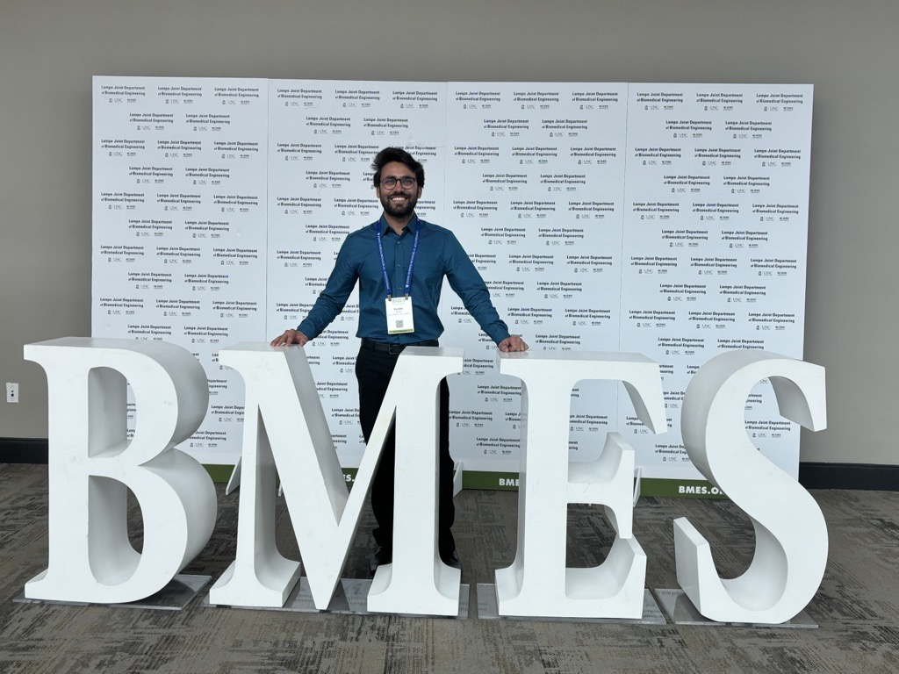
UTD Poster
Poster presentation moments at UT Dallas, reflecting my work on electrochemical biosensors, multiplexed EIS sensing, food safety diagnostics, and translational bioengineering research.
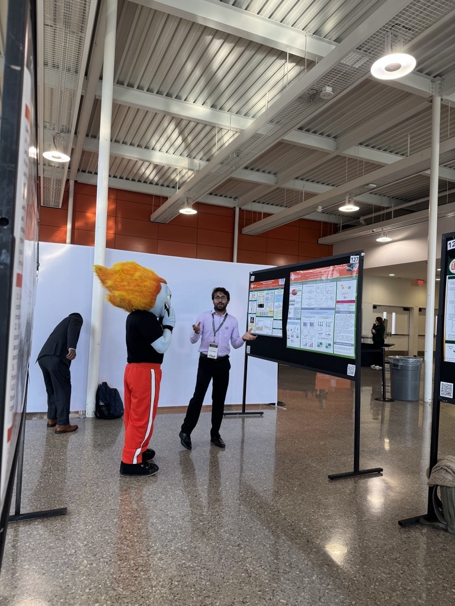
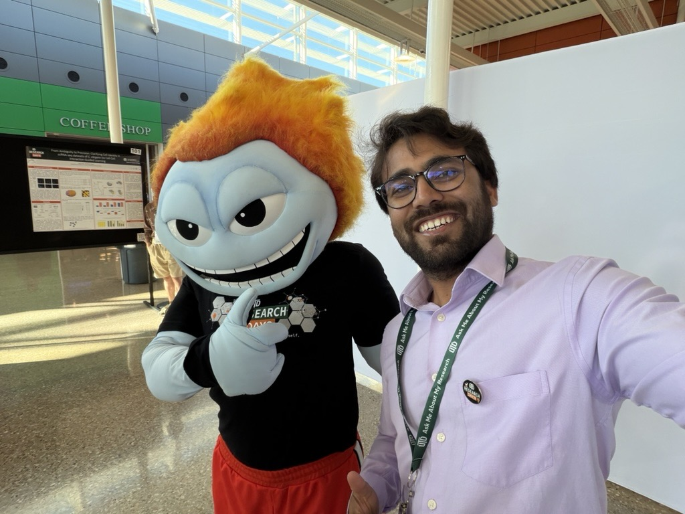
Austin SXSW Product Demo
Product demonstration and showcase moments from Austin SXSW, featuring presentation of sensing or translational platform work in a public-facing innovation and product demonstration setting.
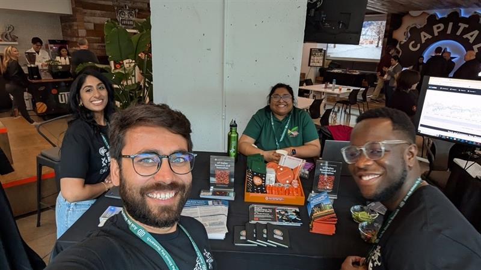
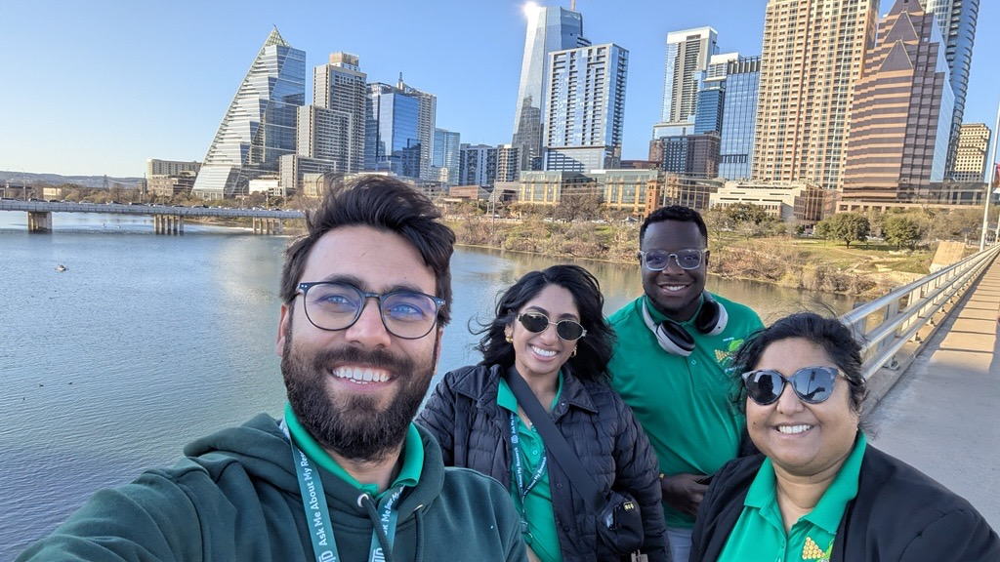
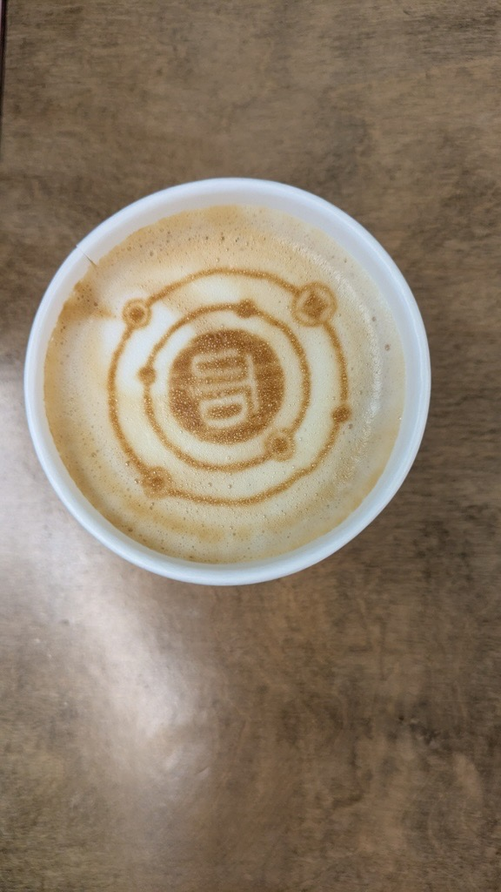
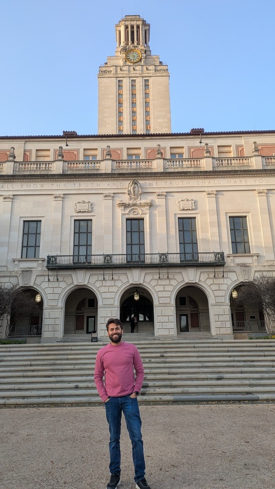